A True Venice Location
50 years ago, Venice was once again under siege — again by tourists. All coming because of one address. Not since the early 40s at the latest had the city been this "hot." People were thronging to the dilapidated "slum by the sea." But what was this new draw?
In Venice, the land that time had somehow forgot, the beach had been closed from April 1943 until it reopened July 6, 1950. The pier had been closed down in 1946, with arsonists finally ending it in May, 1947. In June of 1958, talks on beach development were held to create in the Windward Park area a modern Venice Pavilion.
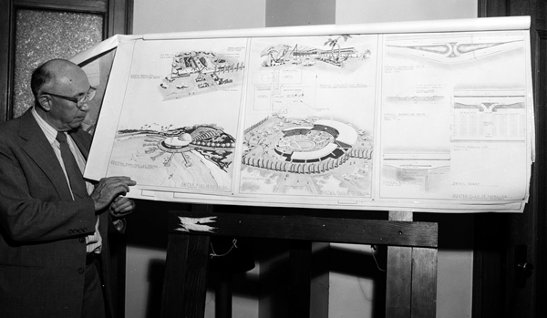
By the end of the 50's, pawn shops and liquor stores had replaced the souvenir shops and bingo parlors. Winos made homes for themselves under the shelter of the Windward Avenue arcade. Drug addicts and motorcycle gangs had replaced the tourists, nowhere to be found. Something had to be done to help save Venice.
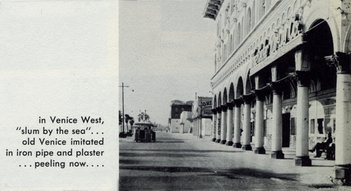
Meanwhile, in the late 1950's, a new phenomenon had begun to arise in Venice - a lifestyle that rejected the bland contemporary values of success and enterprise in favor of a Bohemian life with life centered around poetry, art and new-jazz. Allen Ginsberg's scathing poem "Howl" and Jack Kerouac's novel "On The Road" set the tone and pattern of what was to be called the Beat Generation. Jazz was the language of the hipsters. Beards and bongo drums became their symbols.
Bongo drums. Sunglasses. Like, man, it's real cool. Beards, sandals, poetry readings, Zen, beat chicks playing guitar in tight, orange or turquoise pedal-pushers. Coffee houses lit with candles dripping over cheap wine bottles. The scent of marijuana floating above the beatnik pads of Venice.
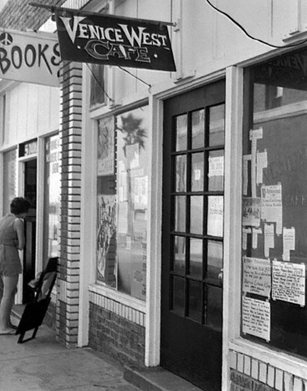
Venice in the late 50's was tolerant of this life style and the beatniks naturally gathered in the local coffee houses, the hubs of this small frantic world. They offered walls covered with paintings and art works, tables to play chess or write poetry or converse at, and often jazz combos, poetry readings and folk singing as entertainment. The Venice West Café and the Gas House were the best known of Venice's Beat gathering places.
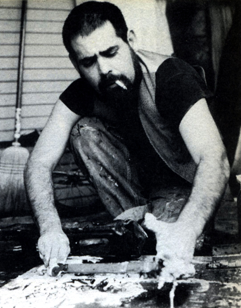
STUART PERKOFF
Looking to support and locate himself in Venice, poet and writer Stuart Perkoff formed a partnership with Rudy Croswell to open the much-storied Venice West Café at 7 Dudley Avenue in early 1958. This narrow quartered location, which once served as a retail store, provided a place for the underground to read their poetry and exhibit their artwork. Writer Lawrence Lipton was so intrigued by this group of beatniks that he wrote "The Holy Barbarians" which chronicled their exploits. Years later, John Maynard wrote "Venice West" which told more of the history of Stuart Perkoff and his poet pals, Tony Scibella and Frank Rios.
Perkoff himself appeared on the TV show "You Bet Your Life," hosted by Groucho Marx. When he denied being a beatnik, Groucho asked him, "What is a beatnik?" Perkoff succinctly explains the philosophy of the Beats: "...their way of life implies getting along on a minimum of money, and a belief in their ability to work out their own problems without external coercion, so long as they don't harm anyone."
Despite their much-maligned profile, it was the Venice version of the "beatnik" that most faithfully embodied Kerouac's standard definition:
"It's a sort of furtiveness... Like we were a generation of furtives. You know, with an inner knowledge there's no use flaunting on that level of the 'public,' a kind of beatness - I mean, being right down to it, to ourselves, because we all really know where we are - and a weariness with all the forms, all the conventions of the world... It's something like that. So I guess you might say we're a beat generation."
Tucked away on Dudley Avenue, in a red-brick store-front slot that had been an Orthodox shul before it was a bleach factory, the tiny space housed one of the least promising commercial ventures in Los Angeles. The Venice West Café could not have started off more awkwardly: Stuart Perkoff had opened its doors three nights ahead of the date specified on the health permit, and two days later, on a Sunday morning, the health inspector himself had happened to come down to Venice for a bit of sun. Naturally, he had written it up on the spot for every violation he could think of, and from there things kept rolling downhill. It was just what Lipton called it, "a real beat generation coffeehouse that tourists haven't discovered yet," but there was still not enough of a Beat Generation in Venice to provide a living for a man with a wife and three children.
Photographs taken inside the Venice West Café and featured in Life Magazine from that time showed two distinctly different levels. Those who wished to see something dark and subversive in them could certainly find it. The café's patrons were rather shabby-looking, its furniture basic and primitive, its walls covered with slogans and abstract paintings, and its clientele, like its jazz combo, racially mixed.
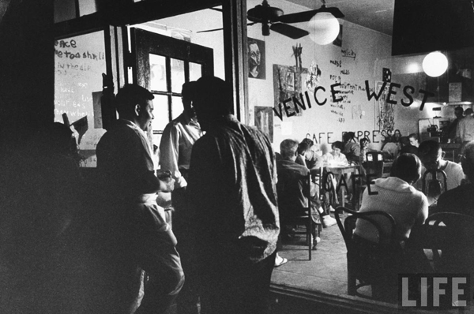
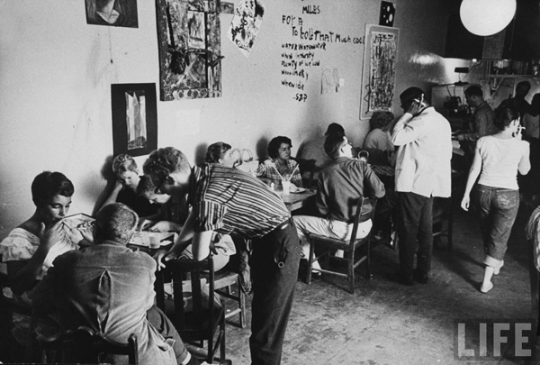
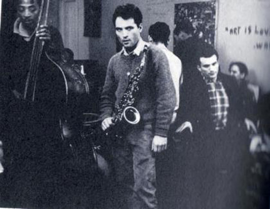
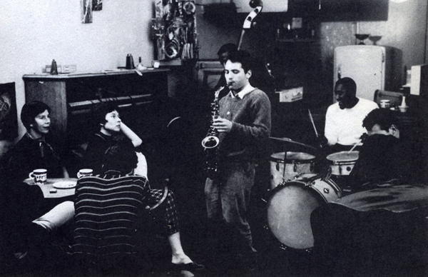
There were even beatific-looking little children present. But the most effective shot of all, taken from the outside looking in and soon to be reproduced on hundreds of postcards for the tourists, showed dark human silhouettes huddling together behind the words Tony Scibella had painted on the window: "Venice West Café Expresso."
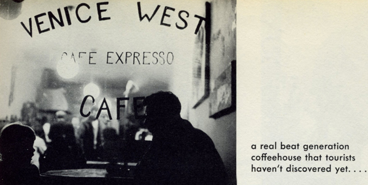
But still, it was one of the few, if only, public gathering places for the people who lived in the shacks and storefronts of Venice, and it served them as a family restaurant, a recital hall, a late-night hangout, and a kind of adult day-care center. Open from dusk to dawn seven days a week, they served American coffee for 25 cents, expresso for 50 cents and cappuccino for 75 cents.
The place had also evolved into just what Perkoff had secretly wanted it to be, a "huge junk construction" with paintings, collages, and poems instead of wallpaper, and tiny, scattered octagonal tables instead of booths. Ball fixtures hung primly from the ceiling, but the stove, fan, refrigerator, and other kitchen fixtures stood as exposed behind the counter as they might have been in anyone's apartment. It was a place to gather, to talk, to think, to read aloud, and to feel a part of something secret that, with any luck, would remain a secret a little longer. Even with the now-famous statement he emblazoned on its wall - "ART IS GOD IS LOVE," artist Wally Berman's motto.
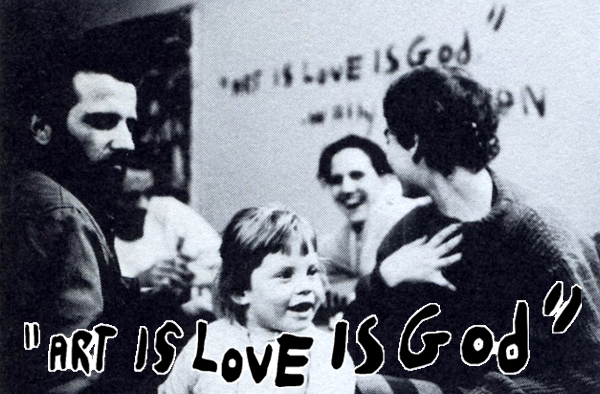
It was everything, in fact, but a place to make money, and in trying to make it work, Perkoff was pushing against himself. His friends tried to help, but how often could anyone eat, how much coffee could anyone drink, and how were his friends supposed to pay for any of it? The café failed, of course.
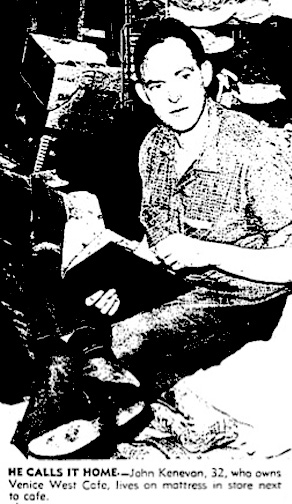
JOHN KENEVAN
On the third or fourth of January 1959, Perkoff sold it to John Kenevan for two hundred dollars. It was the time of year when the entire Ocean Front shut down — bad for business, good for poets. Perkoff felt released, as if his total failure with the café had made a final point.
Kenevan used several hundred pounds of plaster to update and repair the café's crumbling walls, giving it a fresh coat of paint and managing to satisfy his aged land-lady into believing that he was a good tenant. And it worked, along with lucky timing.
Four months after it was sold, in the Spring of 1959, the Venice West Café was suddenly booming. Its new owner often had to turn away customers for lack of seating space. The word had gotten out about the "coolness" of these new, hip, beatniks, and the place was under siege with tourists from all over the United States. These tourists, or derogatorily "squares," waited in line "to see the circus" of beatniks at the café, often considered the seat of the Beat movement in the Southland.
At the time, Venice poet Tony Scibella described the scene thusly: "Venice was a warren of extremely cheap housing & work space, perfect for poets & painters, anonymous neighbors to nod greetings to. In 1958, Stuart Z. Perkoff opened the Venice West Cafe & suddenly there was a place to meet hang yr work, read yr poems out loud! & in pre-tourist days we mostly read to each other, but that was most important to us starting out: the acknowledgment of our peers. In the summer of '59, after the publication of the Holy Barbarians, by Lawrence Lipton, hordes of backpacking beards, w/a paper copy of On the Road in their pocket, showed up on the beach, & then there was: Venice..."
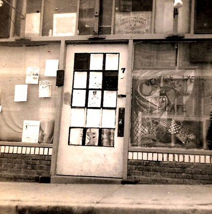
Other visitors were the imitation Beats and hecklers. "They came to see the circus and heckle the performers," one local said.
But the Venice "scene" was changing. "For one thing, there are too many people here now who believe in politics, which is a trivial study compared to the study of one's self," Kenevan said, back then.
Kenevan said he thought painting was his chief interest, when he arrived in Venice in 1958. Since then he has stopped painting because he realized that what he was seeking was to understand himself rather than create art.
"I believe many people thought they were looking for self-expression in the arts at first, but have found they were painting or writing out their ideas only so they could better know themselves."
Because Kenevan was free and easy with handouts to the needy, the Venice West Café barely paid its own way.
Kenevan was able to get by financially only because he received a $73 monthly check from the government for a severe war wound suffered in the Korean War, where he had served as a first lieutenant.
He believed the 3 1/2 years he spent operating the coffee house were more than worth his time.
"I've learned a lot of worthwhile things about myself since I've been here," he said. "You don't have to be an artist in this movement. The goal is to make living an art, to be honest and truthful with yourself and other people."
Inevitably, this peaceful man was ready to move on. "I don't really know why I'm here now," he said in 1962. "The police and the Venice Civic Union (a group of residents organized to fight the beatniks and upgrade the decaying community by the ocean) tried to put me out of business last year and now I've just stuck around to watch it."
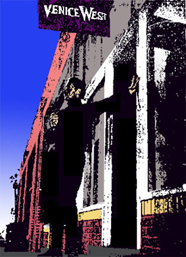
JOHN HAAG
He eventually passed the ownership in September 1962 to John and Anna Haag. Haag, a Harvard honors graduate and one-time technical writer, had dropped out of a promising career to write poetry and struggle making ends meet at the small coffee house. "The poverty that comes from not working is not a scene that is sought for itself but for what it offers," he explained, "freedom and time to think and create and do those things that are personally useful."
That freedom became less and less palpable as legal harassment and civic pressures closed in on the Beats, as drugs ruined many of the talented and as a small army of thrill seekers and weekend "beatniks" weighed down the scene. Despite a general acceptance of marijuana and other non-addictive drugs, lax sex attitudes and scorn toward a regular job and organized religion, the beatniks pictured themselves as saviors of the soul, leading a spiritual quest through a corrupt world.
"Work is simply a way to provide food," said Haag. "But it can be a prison if you approach it like a square career. Square work means not only eight hours a day, but you have to share fashions of dress, talk and behavior. You have to assume a pose which is difficult to assume convincingly unless you're convinced."
Haag, who said he was graduated cum laude from Harvard in 1953, moved to Venice in 1959, but continued working at a fulltime job. Now he is out of work and being slowly maneuvered into a total commitment to the "scene."
When not managing the Venice West Café, the rest of his time went into writing poetry and working with The Venice Forum, a group of beatniks who organized in the summer of 1961 to counter the opposition Venice Civic Union.
Haag and others involved were hopeful it would finally settle down to accomplish the work it set for itself — the protection of the freedom of beatniks and publication of a non-fiction pamphlet with articles explaining the beatnik point of view.
"A few years ago the café had 10 times as many customers as we usually have now," said John Haag, in November of 1963.
"But we're meeting expenses — just barely. I'm not interested in making a lot of money, just enough to keep the place going."
Haag, a former technical writer with Space Technology Laboratory, said he doesn't know how long he and his Italian-born wife will keep the café operating. "We suspect that we will have to close eventually," he said. "Even our faithful customers are being driven from the area by rising rents."
The beat scene was becoming more private, as it was prior to Kerouac's and Lipton's books opening up the scene. Many of the small group of serious artists still left stayed in their "pads" and refused to visit the coffee houses. Those few remaining in the coffee houses were a hardcore of beatniks who refused to give up their vagrant lives — or didn't know how to. Many of the less serious, now that the tourists no longer gawked at them, had gone. Bye bye.
"It's something that we will regret, however, because we feel the coffee house is providing a real community service. It's a place where people can express themselves freely, with no social pressures forcing them to think in a certain way."
Haag, who first was attracted to the Venice West Café as a customer, scorned the appellation "Beatnik." "The so-called Beatniks disassociated themselves from society. Bohemians, which we consider ourselves to be, traditionally have been interested in society. We're very active in civic affairs."
Venice civic groups, like the Venice Civic Union, tried unsuccessfully in 1959 and 1960 to get the Venice West Café evicted. Local residents complained that the coffee house was a gathering place for undesirable characters.
But proprietors John Kenevan and Rosco Brescise, like true Bohemians, had withstood civic pressure and police "harassment" and refused to close down. This was the true civic stance behind the Venice West Café.
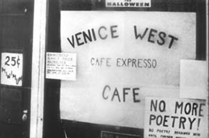
Haag claimed his subsequent arrest in September of 1964 for a public poetry reading without a police license was a continuation of police "harassment" which the café and its patrons had been subjected to "since long before my wife and I bought it two years ago."
"Poetry readings have been a tradition at the Venice West coffee house since its opening six years ago," he pronounced.
"The café has never had a police permit and Venice officers have often been present during the readings. It took them six years to decide that poets should not read their works without police permission."
"The Venice West Café scene was the most promising attempt ever made to bring avant-garde culture to Southern California, and it was murdered by self-righteous, puritanical busy-bodies and hostile police," he said.
"We tried to make a Paris-type Bohemian community out of the Venice beachfront and scared the wits out of the resident fundamentalists and blue-nosed puritans who make up most of the elderly population of Venice."
Finally, on February 1, 1966, Eugene del Genio, a member of the family who owned the property during this time, announced that he would serve a 30-day notice on the café and on an adjacent office housing a W. E. B. Du Bois Club chapter. The rent was due that day.
"I question where they get the money to pay the rent ($75 monthly each on the café and club). He (Haag) doesn't make two quarters off that café."
Haag said if he had to move, he would open another coffee house in the Venice area. Haag had already won the court battles over poetry readings but ultimately decided to close it anyway, after del Genio's February 28, 1966 final eviction notice. After 8 years, the institution was finally gone.
The town, too, soon closed up as a beat enclave. In 1964, the City Council outlawed bongo playing. And soon enough, the youth scene wandered elsewhere, drawn to the lights and electric bands plugged-in along the Sunset Strip, or the nearby Cheetah Club on the Ocean Park Pier. Finally, in 1966, with the Venice West Cafe closing, it seemed that almost as soon as the beat movement appeared, it had disappeared.
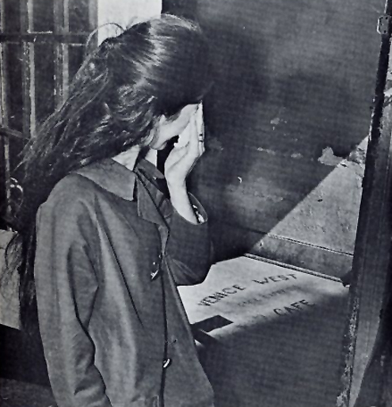
"Most of the beatniks headed back to San Francisco or toward the East Coast," one Venice local recalls. "But, the Beats were soon replaced by the flower children and the hippies and the whole thing started all over again."
The cafe was the center of Beat culture in Southern California until economics and police persecution forced its inevitable closing, which was as much of an event as its opening had been. There was marching, loud protests, gnashing of teeth. Not really. By then, there were other places to catch a cup of joe, or some good vibes. Like the Potpourri Coffee House or Sam's Pizza Parlor, down at the corner of Ocean Front Walk.
That was 1966. Afterward, the address and the place fell from recognition. Jim Smith, a veteran of those Venice times, believes it became just storage for a while and perhaps an artist's studio/home. Carol Fondiller, another Venetian since arriving "in 1959 or 1960, I can't remember," said the Venice West Café was given a hard time due to "it wasn't the right kind of place people wanted for Venice back then. After it closed, it was probably boarded-up. Lots of buildings back then were closed for years and years." And she doesn't know why, were the rents too high? All around there was a succession of failed shops. Fondiller just doesn't know what happened during that eighteen-year hole.
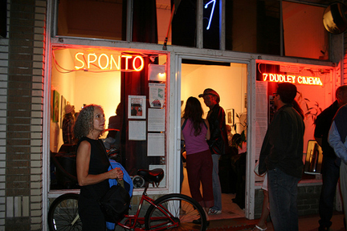
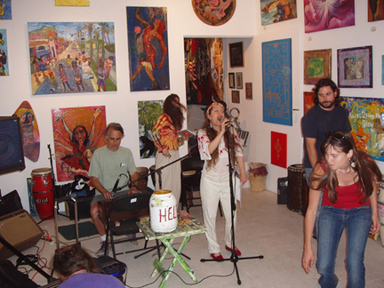
Then in 1984, the space was reborn as the Sponto Gallery. The Beats had previously nurtured creative freedom on this sacred ground, and Sponto felt that sacred ground bubbling up from the their roots, and extended it further. Through glorious Solstice Parties to the 7 Dudley Cinema showings to extraordinary art shows with local and little-known artists, Mark Kornfeld nurtured the unique Venice spirit inherent within that space from the 50's, 60's and forward, until his untimely passing in December 2008.
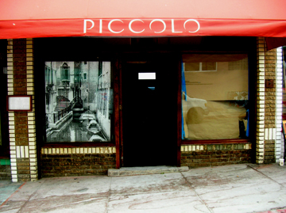
As of this writing, today the space is still under construction as the extended eastern part of Piccolo restaurant.
Of course, the best review of the Venice West Café is a personal, first-hand remembrance. Here, by John OBrien, is his story...
_____
In 1965, when I was fifteen, I started hanging around at the Venice West Cafe. It was so classic as to be almost a cliché — a dank little hole in the wall, with wooden bench seats and tables. Of course, they served espresso, and the place was always full of (to me at that age) coolly romantic hipsters, complete with shades, turtlenecks — yeah, even berets. The radio played modern jazz — Monk, Coltrane, Mingus, Bird, or folk — Dylan, Baez, Peter, Paul & Mary, as well as old and obscure (at the time) stuff like Bill Munroe, Leadbelly and Woody Guthrie. Poetry readings were frequent. The place was like a Mecca to me at that point in my life.
At that time, it was run by John and Anna Haag, who had taken over from Stuart Perkoff who had started it. They, too, struck me as almost impossibly romantic - for one thing, they were stylish and attractive people, and that only served to amplify their general hipness. More importantly, they defied authority, got away with it, and sometimes even won. And to a fifteen year old boy feeling trapped in the web of adult authority (as most do) that right there is the Holy Grail.
So I spent a lot of time there. I heard a lot of good music, heard a lot of good (and execrably bad) poetry, and learned ...well, a great deal more about life than I knew I was learning at the time. I got to rub shoulders with people like Taylor Meade, Claire Horner, and a whole menagerie of creative, edgy people who were pushing toward the next thing - and there was almost a tension in the air, a compelling sense that something exciting and world-changing was about to happen. And I think I was a lot better off there than I would have been in a "youth soccer" program.
Sometimes, I worry that parents overprotect their kids these days. The typically obsessed, terrified, "helicopter" parent of today wouldn't consider letting their teenager hang out with a bunch of degenerates such as infested the VW. And I fear that a whole lot of kids are going to suffer poorer, shallower lives because of that.
I'm just very, very fortunate that I had the chance to experience the things I did growing up in a community such as Venice was then. I hope those kind of experiences will always be there for kids - there is no substitute to be found in Disneyland...
To which Ken Cooper replied:
I would sometimes join my beatnik brother at the Venice West Cafe. At that time I remember old worn overstuffed couches for seating, pretty good coffee, and beatnik poets. I wish I could remember the name of that poet who stood there on the platform that one dreary afternoon and said, in his cool, dry, antiestablishment voice, "Everybody loves change, as long as it's to something they're used to." To this day I refer to his words when plans for "change" are voiced by the saintly well intentioned.
_____
One final thought... The geniuses who filled the cheap bungalows on the North Beach walkstreets and the canals hardly wanted more than to gather occasionally to hear each others' voices, and were dangers only to themselves. If the actual enduring literary achievements of the Venice beats are modest, their style lives on.
- Michael C. Ford
Sources sited in this article are: Los Angeles Times (4-15-62 — 3.3.66), Venice West - The Beat Generation in Southern California by John Arthur Maynard, The Holy Barbarians by Lawrence Lipton, Los Angeles: The Enormous Village by John D. Weaver, poetryflash.org, and The Venice West Cafe by John OBrien on dogtownink.com.
|